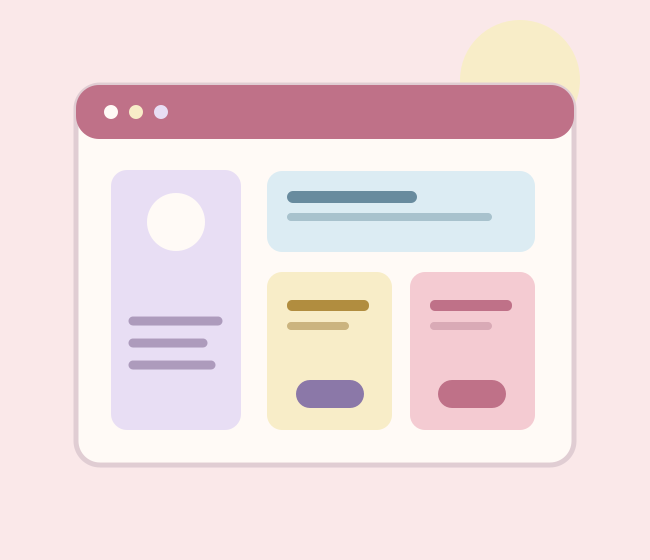

Servicios · Área 01
Diseño de interfaces.
Una buena interfaz no necesita elementos de más: necesita orden, intención y pequeños detalles que hagan más sencilla la experiencia.

Diseñar para comunicar
En esta área trabajo la distribución de los elementos, la jerarquía de títulos, la selección tipográfica y el uso del color. Busco que la información tenga una lectura natural y que los controles sean reconocibles.
También considero la adaptación a distintos tamaños de pantalla, la legibilidad y la accesibilidad básica, como utilizar textos alternativos en las imágenes y mantener contrastes adecuados.
Estructura visualHTML5 semánticoCSS3Jerarquía visualDiseño adaptable